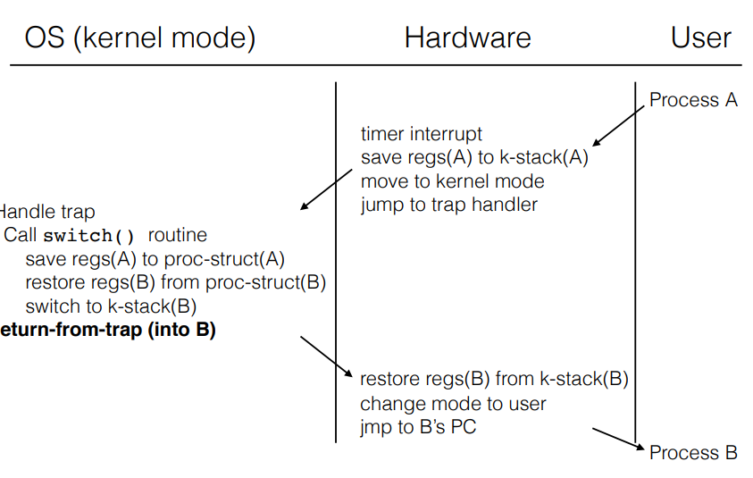

A process contains all of the state for a program in execution
A process can be in 3 states ready, blocked, running.
OS maintains a collection of state queues that represent the state of all processes in the system, typically one queue for each state. As a process changes state, its PCB is unlinked from one queue to another.
Context switch switch the CPU to another process by: saving the state of the old process, loading the saved state for the new process.

A function call that invokes the OS, whenever an application wants to use a resource that the OS manages, it asks permission.
Hardware runs in user mode or system mode; some instructions are privileged instructions and only runs in system mode.
On a system call interrupt, the mode bit is switched to allow privileged instructions to occur.
C program provides user mode functions that requires system calls. C library functions then passes arguments to OS and execute special instructions to trap to system mode. Then syscall handler figures out which system call is needed and calls a routine for that operation.
Kernel must verify passed arguments, otherwise unwanted instructions can be executed in kernel mode.
A system call is identified by a unique number (passed to register %eax).
int N to ask context switch to kernel mode and invokes kernel's interrupt handler for X (__interrupt dispatch)iret (interrupt return)